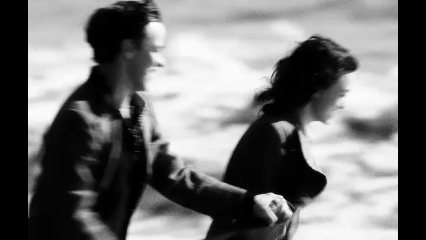
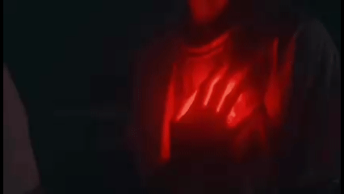
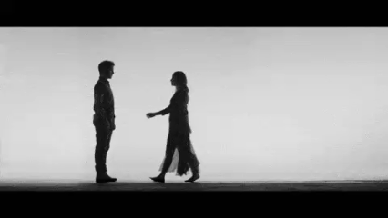
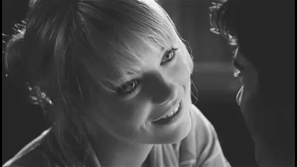
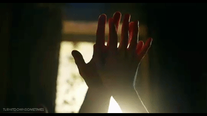
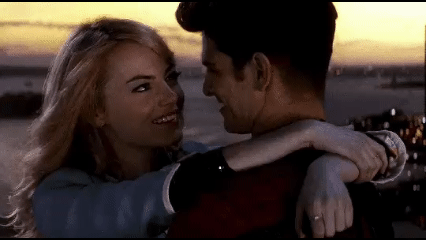

Para vos.
Para el amor que elegí.
Para el que me conoce incluso cuando no digo nada y aun así se queda.
“Seis meses de elegirnos en la calma y en la tormenta.
Seis meses de desaprender el miedo y aprender a ser hogar.
Gracias por estos primeros 180 días de nosotros.”
Feliz 6 meses, mi amor.
(Toca la página para avanzar)
Este libro es para vos. No para idealizarte, ni para convertir nuestra historia en algo perfecto, sino para dejar constancia de lo real. De lo que fue sentido de verdad, incluso cuando dolió, incluso cuando no supimos cómo hacerlo mejor. Lo escribí porque hubo un momento en el que amar dejó de ser una idea y pasó a ser una experiencia concreta. Tu voz, tus silencios, tu forma de estar y de irte un poco, de volver, de quedarte a medias y después del todo. Porque hubo cosas que no quise olvidar, y otras que necesitaba entender escribiéndolas. Acá está lo que me generaste. Lo que me moviste por dentro. Las veces que dudé, las veces que elegí, las veces que me quedé aun con miedo.
No desde la fantasía, sino desde el vínculo. Desde lo que pasa cuando dos personas reales se encuentran y tratan de amarse con lo que tienen, no con lo que les sobra. Este no es un libro para convencerte de nada. Es un libro para abrirte mi mundo. Para mostrarte cómo te viví, cómo te siento, cómo te elijo incluso cuando no todo es fácil. Porque amar no siempre es suave, pero cuando es verdadero, vale la pena atravesarlo. Hay partes que hablan de luz, otras de cansancio, otras de incertidumbre. No porque el amor haya faltado, sino porque estuvo presente de verdad. Porque solo lo que importa de verdad puede mover tanto. Si estás leyendo esto, es porque sos parte de mi historia. No como un capítulo más, sino como alguien que dejó marca. Alguien que cambió mi forma de amar, de esperar, de quedarme. Este libro existe porque existís vos en mi vida. Y porque, aun sabiendo todo lo que amar implica, yo volvería a elegirlo. Volvería a elegirte.
El día que te conocí no sabría cómo describirlo. Eran alrededor de las cuatro de la mañana y yo estaba jugando, como cualquier otra noche. Un chico se me acercó y comenzó a hablarme, riéndose. Eso me causó gracia e intriga al mismo tiempo. Me preguntaste de dónde era y yo te respondí groseramente. Ese día, cuando vos me hablaste, me sentía un personaje; y yo, sin darme cuenta, empecé a asumir el papel: exageré comentarios, actitudes, como si estuviera interpretando una versión más cansona de mí misma. Te me acercaste risueño, y por alguna razón había algo en tu risa que no quería perder. Recuerdo que conversamos por un rato. No fue una charla profunda ni trascendental. Era tarde, el cansancio se hacía sentir, y no sé si fue eso, pero por alguna razón sentí algo cuando te vi venir hacia mí. Como si mi corazón te amara desde el primer instante que te vio pasar.
Esa noche fue tan extraña, como si no quisiera que se acabara nunca. Cuando llegó el momento de irme a dormir, apareció una incomodidad extraña. No quería irme, aunque no supiera explicar por qué. Decir que me iba no se sintió como un cierre natural, sino como una interrupción. Por primera vez, me cruzó la idea de que no volveríamos a hablar, y ese pensamiento me inquietó más de lo que estaba dispuesta a admitir.
Pero vos dijiste:
—Agregame entonces.
—¿Para qué? —respondí.
Y sin embargo, mi corazón me latía a mil. Del otro lado sentí una satisfacción difícil de explicar, como si ese gesto mínimo hubiera desplazado algo dentro de mí. Me mandaste la solicitud y me fui. Me fui con una sensación extraña en el pecho, pero con una sonrisa que me salía sola; aceptar esa solicitud se sentía como si hubiese marcado un antes y un después. No le puse nombre a nada. Solo sabía que algo había quedado abierto.
Tengo que confesar que los próximos días, entraba a jugar a propósito cada vez que te veía conectado y por alguna razón siempre funcionaba. Cuando me seguías, la felicidad que sentía no tenía nombre. Automáticamente entraba en mi papel de humorista, me volvía más graciosa, más exagerada, como si fuese una payasita, y lejos de incomodarme, me gustaba serlo. Había algo en hacerte reír que me impulsaba a seguir intentando que eso no se desvanezca, porque por alguna razón el que te rías me generaba ganas de seguir diciendo chistes para que nunca dejes de hacerlo. No importaba la hora en la que jugáramos. Si yo estaba ocupada, empezaba a postergar cosas, a dejar tareas para después, con tal de poder estar con vos. Casi nunca coincidíamos de día; la mayoría de las veces era de noche, cuando todo se aquieta y, dicen, uno se vuelve más vulnerable.
Y tal vez era cierto, porque en esas horas yo me permitía sentir sin reservas, bajar la guardia y quedarme un poco más de lo que tenía pensado. Mi corazón, por alguna razón, se sentía distinto. Más delicado. Como si hubiera perdido una capa de protección que normalmente me mantenía a resguardo. Era frágil, como un cristal, pero al mismo tiempo liviano, sostenido por algo suave, como un hilo fino que no lastima, aunque pudiera romperse con cualquier movimiento brusco. Todo se volvía más sensible. Las palabras tenían otro peso, los silencios duraban más de lo habitual y cada gesto se registraba con una atención que no estaba buscando. Había algo en el aire, algo palpable, una tensión suave que no incomodaba, pero que tampoco pasaba desapercibida. Como si el espacio entre nosotros estuviera cargado de algo que todavía no se decía, pero ya se sentía.
Y, aun así, no había miedo. No era ansiedad ni una expectativa concreta. Era una apertura nueva, una forma distinta de estar. Una calma particular que me envolvía sin dar explicaciones. Las conversaciones fluían con naturalidad, los silencios no pesaban y cada momento compartido tenía un valor íntimo, propio, como si bastara con estar ahí. Me sentía cómoda. Extrañamente protegida, incluso sin garantías. Estar cerca tuyo me permitía bajar defensas sin darme cuenta, confiar sin preguntas, quedarme sin pensar demasiado en el después. No había esfuerzo ni cálculo; solo la sensación de estar donde quería estar, de permanecer sin razones que lo justificaran. No éramos nada. Y, en teoría, eso debería haber sido simple. No existían promesas, ni explicaciones pendientes, ni derechos implícitos. No había acuerdos ni futuros insinuados. Éramos conversaciones que comenzaban sin horario y se disolvían cuando el cansancio se imponía.
Encuentros verbales que surgían sin anuncio y se extendían sin motivo aparente. Algo liviano, sin nombre. O eso era lo que parecía. Sin embargo, cada vez que tu nombre aparecía en la pantalla, algo en mí se reordenaba. Por el momento no era una euforia evidente ni una ansiedad declarada; era más sutil. Como si todo encontrara un nuevo eje, como si el día se acomodara levemente alrededor de esa presencia. Yo muchas veces fingía indiferencia. Contestaba más tarde de lo que quería, simulaba estar ocupada, sostenía una distancia que no sentía. Me repetía que era lo correcto, que no había nada que cuidar. Pero la verdad se imponía sola: te esperaba. Esperaba que escribieras, que aparecieras sin aviso, que me hablaras como si el mundo se redujera a ese intercambio. Y, al mismo tiempo, me reprochaba esa espera. Porque ese desinterés construido se desmoronaba en segundos.
Porque me ablandaba al hablar con vos. Porque no me molestaba descubrirme evidente, ni notar cómo mis gestos me traicionaban. Había una parte de mí —esa que ama sin defensas— que ya no veía límites donde yo intentaba imponerlos. Todavía no sabía qué lugar ocupabas en mi vida. Pero ya había empezado a abrirte espacio. Poco a poco, empezabas a volverte costumbre. Y yo siempre temí a las costumbres que duelen. A esas presencias que se instalan sin pedir permiso y, cuando faltan, dejan un vacío desproporcionado. Aun así, no intenté detenerlo. No puse freno. Dejé que ocurriera.
Esa sensación en el pecho nunca se desvaneció; por el contrario, con cada día que pasaba se volvía más intensa, más difícil de ignorar. Recuerdo que, a veces, hacía chistes sobre que no jugábamos porque estabas con tu moza, o comentarios parecidos. Los decía en tono liviano, casi como una broma sin importancia, pero la verdad era otra: necesitaba saber si estabas con alguien. Había algo en mí que buscaba respuestas incluso cuando fingía no quererlos. Vos, muchas veces, reías. Otras, la nombrabas de forma casual en tus respuestas. Nunca me dijiste nada de manera directa, pero yo lo sentía. Sentía la presencia de otra persona, aunque no tuviera certezas. Era una intuición persistente, una incomodidad silenciosa que se instalaba sin pedir permiso. Entré a tus amigos. Había varias chicas, nombres y perfiles que miré sin pensar demasiado.
Pero entre todas, hubo una que me llamó un poco más la atención. No sabría decir por qué. No fue algo concreto ni una certeza, más bien una sensación leve, como una sospecha que apareció y se quedó ahí. No tenía pruebas ni razones claras, solo esa intuición incómoda de que tal vez era ella. Y ahí volvió esa sensación en el pecho. Esta vez no era lo mismo. No era emoción ni ilusión. Era una molestia silenciosa, un nudo que aparecía sin avisar. No dolía por amor, dolía por celos.

"Hay una punzada sorda que no se explica con lógica, esa que nace cuando el alma empieza a reclamar un lugar que el silencio todavía no le ha concedido. Eran celos, sí, pero de esos que queman por dentro porque nacen de la incertidumbre; el miedo atroz de descubrir que, mientras yo te construía un altar en mis noches de desvelo, quizás yo era solo una voz pasajera en las tuyas. Es la sombra que empaña el cristal de lo que apenas comienza, recordándome que incluso en la magia de conocernos, el corazón ya tenía miedo de perderte sin haberte tenido del todo."
El sentimiento creció tanto, se volvió tan persistente, que dejé de ignorarlo. Dejé de fingir que no pasaba nada y empecé a vivirlo. Mi corazón te adoraba. Tenía muchas ganas de decirte lo que sentía. Quería que fueras mi novio, quería que seamos algo más que amigos. Aun cuando lleváramos menos de un mes conociéndonos. Necesitaba liberar eso que tenía atrapado en el pecho, porque la intensidad era tal que, por momentos, dolía. Cada vez que te escribía, mis manos temblaban. Estar con vos me ponía nerviosa de una forma que no sabía disimular. Y, aun así, me hacía la fuerte. Fingía calma, cuando en realidad mi corazón se ablandaba cada vez que estaba cerca tuyo. Y aunque intentara hacerme la desentendida, la verdad es que desde el primer minuto me sentí así. Te quise así, sin defensas. Te adoré así, sin medida, sin tiempo.
Sin saber todavía en qué lugar iba a caer todo eso que estaba empezando a sentir. Tenía miedo de no ser correspondida, porque, dentro de todo, no actuabas con el mismo interés que yo. A veces parecía que sí, otras no tanto. Me dabas pequeñas señales, gestos sutiles que me ilusionaban, pero nunca algo lo suficientemente claro como para dejar de dudar. Yo necesitaba algo más directo. Algo que no tuviera que interpretarse ni adivinarse. Y, aun así, cada vez que estábamos juntos, volvía a aparecer esa tensión. Una cercanía que se sentía en el aire, constante, evidente. Algo que no se decía, pero que estaba ahí, creciendo, pidiendo lugar. La química que tenía con vos no fue solo llevarme bien o sentir atracción. Fue algo mucho más profundo, más inmediato, casi imposible de explicar con lógica.
Fue como si mi cuerpo lo hubiera reconocido antes de que mi cabeza pudiera entenderlo. Desde el primer momento todo fluyó con una naturalidad que no estaba buscando, pero que tampoco pude frenar. Hablar con vos no requería esfuerzo. Las conversaciones se daban solas, los silencios no incomodaban y había una sincronía extraña en la manera en la que pensábamos, reaccionábamos y sentíamos. A veces alcanzaba una risa, una frase, una pausa, para entendernos por completo. Era como si habláramos el mismo idioma emocional, uno que no necesitaba traducción ni tiempo. Esa química era tan intensa que, por momentos, parecía ir más allá de lo real. Como si no nos estuviéramos conociendo, sino recordando. Había una sensación constante de familiaridad, de cercanía, de encaje. Todo se sentía inevitable, como si nuestras historias hubieran encontrado un punto exacto donde coincidir.
No era solo deseo ni ilusión. Era calma y vértigo al mismo tiempo. Era sentirme en el lugar correcto, con la persona correcta, aun sin saber qué vendría después. Una noche, entre tantas, uno de los dos confesó que se sentía extraño con la presencia del otro. Yo recuerdo haber empezado a describir esa sensación: el corazón latiendo tan rápido que casi duele, la adrenalina mezclada con alivio, algo intenso que, aun sin entenderlo del todo, no querés que se termine nunca. Vos asentiste. Dijiste que también te resultaba raro, que era un sentimiento nuevo, que nunca te había pasado. Yo dije lo mismo. Y recuerdo con exactitud lo que ocurrió en mi cuerpo cuando entendí que vos sentías lo mismo. El pecho se me aflojó, el corazón se alivió, como si por un instante se hubiera asegurado algo.
Algo que hasta ese momento era completamente incierto. Recuerdo que esa noche nos quedamos despiertos hasta las seis de la mañana hablando de eso: de cuánto tiempo lo habíamos estado guardando, de en qué momentos lo sentíamos con más fuerza. Y nos dimos cuenta de que, desde el primer día, ambos habíamos quedado flechados. Lo repetimos una y otra vez, como si decirlo en voz alta lo volviera más real, como si necesitáramos escucharlo hasta cansarnos.
—“Siento que te amo”, dijiste vos.
Y yo no dudé. Lo sentía desde hacía días, desde ese primer temblor en el pecho que no supe ignorar. Te respondí que a mí me pasaba lo mismo. Tenía ganas de decirte que te amaba y no dejar de hacerlo nunca, como si al fin se hubiera liberado algo que llevaba tiempo atado.
Y aunque racionalmente sabía que había sido poco, la sensación era tan intensa que se sentía eterna. Fueron días de conocernos, y aún más noches entregados a lo mismo. A repetir cuánto nos anhelábamos, a reconocer lo tranquilos que nos hacía la presencia del otro. Pasábamos horas y horas juntos, volviendo una y otra vez a esas certezas, como si necesitáramos reafirmarlas. Y se sentía bien. Muy bien. El simple hecho de estar con vos calmaba todo dentro de mí, como si no necesitara nada más que eso: compartir el tiempo, la charla, la cercanía. Como si, por un rato, nada más hiciera falta, solamente vos.
Dios, cómo amaba esas noches. Noches que se estiraban durante horas y, aun así, se sentían como si hubieran durado apenas unos minutos. Nos quedábamos despiertos hasta el amanecer hablando de lo que el otro nos despertaba, de lo que nos hacía sentir. De cómo me decías que me amabas, de cómo se nos escapaban sonrisas cuando alguno llamaba al otro "amor". De esas promesas suaves, dichas casi en voz baja, de tratarnos con ternura. De cuando decías que querías cuidarme como si fuera tu novia. Se sentían tan bien. Tan reales. Tan nuestras. Pero había algo que no estábamos diciendo. Algo que quedaba flotando en el aire, incluso cuando intentábamos ignorarlo. Nos estábamos olvidando de ella. Y no tardaron en llegar esas otras noches. Las noches en las que la nombrabas. En las que confesabas lo mal que te hacía sentir pensar en cómo se sentiría ella. Yo escuchaba en silencio.
Quería cuidarte, quería respetar tus decisiones, quería entenderte. Y lo hacía. Siempre me ponía de tu lado, incluso cuando eso significaba guardarme lo que a mí me pasaba. A veces me convencía de que estaba bien, de que podía con eso. De que lo nuestro, aunque no tuviera nombre, valía la pena. Pero en el fondo empezaba a sentir esa incomodidad lenta, esa sensación de estar compartiendo algo tan intenso y, al mismo tiempo, no poder ocupar el lugar que parecía corresponderme. Vos decías que estabas aburrido de ella. Lo decías seguido, casi como si repetirlo lo volviera más real. Te quejabas de la rutina, del desgaste, de sentir que ya no era lo mismo. Decías que algo se había roto, que ya no te llenaba, que estabas cansado. Yo te escuchaba con atención, con cuidado, tratando de entenderte. Te creía. Porque cuando hablabas, sonabas sincero.
Pero aun así, no eras capaz de dejarla. Me decías que me amabas. Que conmigo era distinto. Que yo era lo que querías realmente. Pero no te animabas a jugártela por mí. Y esa contradicción empezó a instalarse entre nosotros como una grieta silenciosa. Porque tus palabras iban por un lado y tus decisiones por otro. Y yo quedaba atrapada en el medio, intentando sostener algo que nunca terminaba de definirse. Después venía la duda. La tuya, cuando te preguntabas si estaba bien lo que hacíamos. La mía, cuando empezaba a preguntarme por qué seguía ahí si sabía que no era la prioridad. Nos cuestionábamos, dábamos vueltas sobre lo mismo, intentábamos convencernos de que todo era más simple de lo que parecía. Y después, inevitablemente, aparecía ella. Aunque no estuviera presente, ocupaba el espacio. Se metía en nuestras charlas, en los silencios, en mis pensamientos.

Comenzaron los desacuerdos. No eran discusiones grandes ni escenas dramáticas; eran roces silenciosos, momentos incómodos que se repetían demasiado seguido. Siempre giraban alrededor de lo mismo, aunque a veces intentáramos disimularlo. Ella aparecía, y yo desaparecía. Me iba casi de forma automática, como si mi cuerpo entendiera antes que yo que ese no era mi lugar. Con el tiempo, esos desacuerdos dejaron de ser excepciones y pasaron a ser parte de lo nuestro. Vos te enojabas cuando yo me iba, me pedías que me quedara, que no exagerara, que no hiciera las cosas más difíciles. Pero para mí ya lo eran. Cada vez más. Porque quedarme significaba aceptar una incomodidad constante, una sensación de estar ocupando un espacio prestado, frágil, que podía romperse en cualquier momento. Ella empezó a sospechar. Y yo empecé a sentir el peso real de la situación.
No era solo incomodidad; era culpa, era angustia, era esa sensación horrible de estar donde no correspondía. Me sentía atrapada entre lo que sentía por vos y lo que sabía que estaba mal. Y lo peor era que, aun así, me pedías que me quedara. Que no me fuera. Que no hiciera un problema de algo que, para vos, parecía manejable. Pero para mí no lo era. Porque quedarme significaba aceptar ser la segunda opción. Significaba estar cuando sobraba tiempo, cuando no había nadie más, cuando el lugar principal ya estaba ocupado. Y yo no podía sostener eso. No podía seguir haciéndome chiquita para no perderte. No podía seguir acomodándome para que nada se rompa, cuando la que se estaba rompiendo era yo. Tus palabras estaban ahí, claras, repetidas. Pero no coincidían con la forma en la que me tratabas. Y eso dolía más que el silencio.

Porque el silencio no promete nada. En cambio, las palabras crean ilusión, generan esperanza. Y cuando alguien te ama de verdad, se nota en los actos, en la elección diaria, en la forma de cuidarte, de no ponerte en lugares que duelen. Yo, en cambio, recibía frases y gestos a medias. Momentos intensos seguidos de ausencias. Cariño que no se sostenía. Y tenía que convencerme de que eso también era amor, aunque en el fondo supiera que no lo era. Me repetía que tenía que entenderte, que no era tan simple, que no era el momento. Pero la verdad empezaba a ser clara, aunque me costara aceptarla: amar no debería doler así. No debería hacerte dudar de tu lugar ni de tu valor. Y aun así, me quedaba. Porque te quería. Porque tu presencia calmaba algo dentro de mí. Porque hablar con vos ordenaba el caos, aunque después lo volviera a desarmar.
"Hay una soledad inmensa en estar acompañada por alguien que no te elige del todo. Es el peso de las promesas que se quedan en el aire, de los besos que llevan nombre ajeno en el pensamiento y de las noches donde el 'te amo' suena a disculpa. Me quedé porque creí que mi amor bastaría para llenar los huecos de tu indecisión, pero terminé entendiendo que no se puede ser refugio de alguien que tiene su casa en otra parte. Me rompí intentando ser el pegamento de algo que nunca fue mío."
Elegirte sin que me eligieras del todo fue una forma de amor que no sabía que existía. Una forma que dolía, que confundía, que me hacía chiquita. Y aunque por fuera parecía que nada estaba pasando, por dentro yo ya estaba rompiéndome en silencio.
Tal vez ahí entendí algo importante: que amar no siempre alcanza, y que decir "te amo" no significa saber cuidar.
No esperaba nada concreto. No pedía títulos ni fechas. Solo quería estar. Quería compartir silencios, risas, noches largas y conversaciones que parecían no terminar nunca. Me bastaba con saber de vos, con sentirte cerca de la forma que se pudiera, aunque no fuera la que yo soñaba. A veces dolía. Dolía sin explicación, sin motivo claro. No entendía del todo por qué me dolía, ni de dónde venía ese nudo en el pecho. Solo sabía que estaba ahí. Yo no veía lo malo. O tal vez no quería verlo. Estaba tan cegada por lo que sentía que no me daba cuenta de las cosas. El dolor aparecía, pero no lo cuestionaba. Yo me quedaba. Me quedaba con todo el amor del mundo, creyendo que eso iba a alcanzar. Por momentos me sentía tonta. Por momentos, dolía. Hubo muchísimas charlas en las que yo te aconsejaba sobre ella.
Vos no sabías qué hacer y, dejando de lado que yo me moría por estar con vos, siempre intenté aconsejarte desde un lugar sincero: quería que fueras feliz, incluso si eso significaba que lo fueras con alguien más. Aun así, me costaba entender. No entendía cómo no podías dejarla si decías que no la querías, si tanto te quejabas, si tantas veces me decías a mí que yo era lo que realmente querías. Recuerdo sentir mucha frustración. Sentía que lo que yo decía no valía nada. A veces simplemente ignorabas mis palabras. Yo era muy directa con lo que sentía; vos, en cambio, eras más seco. Las únicas veces que te mostrabas vulnerable eran esas madrugadas en las que nos quedábamos hablando hasta tarde. Después de eso, muchas veces, me hacías sentir tonta. Yo sentía demasiado cariño por vos.

Recuerdo llorar mucho después de esas charlas sobre ella. Y también recuerdo que, después de tantas, llegó un momento en el que dejé de creerte. Dejé de creer en lo que decías sentir por mí. Empecé a pedirte algo que ya no podía callar: que me lo demostraras. Porque entendí que las palabras no valen nada si no vienen acompañadas de acciones. Vos me pedías que me pusiera en tu lugar. Pero creo que vos debiste haberte puesto, al menos por un ratito, en el mío. Ser la segunda opción no duele de golpe. Duele despacio. Es una herida silenciosa que no sangra, pero cansa. Es darte cuenta de que estás, pero nunca del todo. De que te buscan cuando sobra tiempo, cuando falla alguien más, cuando ya no queda nadie mejor a quien llamar. No fue de un día para el otro. Fue de a poco.
Empecé a cansarme de entender siempre, de justificar lo injustificable, de esperar sin saber qué estaba esperando. Empecé a cansarme de ser paciente, de adaptarme, de hacerme chiquita para no incomodar. El amor seguía ahí, intacto. Pero yo ya no estaba igual. Había días en los que me descubría callando cosas que antes hubiera dicho sin pensar. Días en los que dudaba de mí, de lo que sentía, de si estaba pidiendo demasiado cuando en realidad solo estaba pidiendo lo mínimo. Ya no lloraba tanto como antes. Y eso no era alivio: era desgaste. Era el cuerpo entendiendo antes que la cabeza que algo no estaba bien. Me preguntaba si amar tenía que doler así. Si querer a alguien implicaba sentirse sola incluso estando acompañada. Si era normal sentirse invisible mientras daba todo. Y aun así, me costaba soltar.

Porque soltar no es dejar de amar, es aceptar que el amor no alcanza cuando no hay elección. En ese cansancio silencioso empezó a nacer algo distinto. No era enojo, ni resentimiento. Era una claridad triste, pero necesaria. Ahí entendí que el amor también se cuida. Y que si no te cuidan, te desgastás. Tal vez ese fue el principio del final. Vivía con la sensación de estar siempre a medio paso de ser elegida. De esforzarme un poco más, por si esta vez sí. Era esperar mensajes que llegaban tarde. Palabras que no eran promesas. Y, en los pocos casos en que parecían serlo, nunca se cumplían. Y aunque nadie lo dijera en voz alta, se sentía igual: si hubiera otra opción, no sería yo. Muchas veces me pregunté qué me faltaba. Si era insuficiente. Si no te llenaba lo suficiente.
Y aun así, con una sonrisa, intenté seguir. Se me viene a la cabeza ese día que me hiciste jugar con ella. Fue tan incómodo. Tenerla ahí, tragarme los "te amo", cuidarme de no acercarme demasiado. Sabiendo que yo te amaba y que no podía estar con vos por su culpa. Por momentos se me olvidaba que yo era la segunda. Te sentía tan mío, tan cerca, tan conectados, que la realidad se diluía. Esa ilusión duraba lo que la realidad tardaba en volver a golpearme. Y cuando volvía, la frustración caía de golpe. Recuerdo haber inventado una excusa para salirme. Y al hacerlo, sentí un vacío enorme. Un dolor en el pecho tan inmenso, como si dos manos me estuvieran apretando hasta dejarme sin aire. En ese momento, hubiese preferido que me estallara el corazón antes de que me doliera de esa forma.
"Aquel día, jugando con ella mientras yo te amaba en silencio, entendí el verdadero significado de la palabra invisible. No era solo que no me vieran, era que yo misma me estaba borrando para no estorbar en tu otra vida. Sentir que te pertenecía en la madrugada y que era una extraña al mediodía fue el veneno más lento que probé. Mi corazón no estalló, pero se enfrió, comprendiendo que no se puede llamar hogar a alguien que te abre la puerta solo cuando la calle está vacía."
No mucho después de esa situación, me fui. Si no mal recuerdo, fue luego de una de esas charlas en las que te aconsejaba sobre ella. Esa noche me saturé. No pude más. Necesitaba un respiro. Creía —por primera vez— que merecía algo mejor. No me soltabas, pero tampoco me sostenías. Yo estaba en ese lugar incómodo donde no me iba, pero tampoco me quedaba de verdad. Estaba en un lugar donde me hacían sentir que lo que yo sentía estaba mal. Donde dudaba de si era lo suficientemente interesante, porque el trato nunca fue recíproco. Y aun así, me emocionaba con cada mensaje tuyo, aunque fuera el más común del mundo. Un "hola" tuyo significaba más que un "te amo" de cualquier otra persona. Recuerdo haber llorado esa noche, porque realmente quería que fueras vos.
Me llenaba de emoción imaginar un futuro a tu lado. Soñaba con un trato como el que le dabas a ella —o como yo imaginaba que la tratabas—, con todo ese cariño que sentía que conmigo te guardabas. Yo soñaba con eso: con un "te amo" que no viniera acompañado de culpa, con un "te quiero" que no terminara en un "esto está mal". Y todo esto que hoy escribo, me hubiese gustado verlo antes. Pero fueron meses de reflexión para poder entender y poder escribir eso que mis ojos llenos de amor no veían. Amar no debería ser un secreto, ni una espera eterna, ni un consuelo para cuando el mundo falla. Amar debería ser luz, y con vos, por mucho tiempo, solo fue una sombra hermosa en la que elegí perderme.
Los primeros días sin vos fueron un caos. Tenía un impulso constante de volver, de escribirte, de buscarte. Mis días giraban alrededor de pensarte, de preguntarme una y otra vez si había tomado la decisión correcta o si tendría que haberme quedado. Intentaba convencerme de que también debía pensar en mí, en lo que era mejor para mi bienestar. Creía —o necesitaba creer— que con el tiempo ese sentimiento se iba a ir. Que el ruido iba a bajar. Que iba a aprender a estar sin vos. Pero no te voy a negar nada: te pensé mil noches. No hubo una sola noche en la que no aparecieras, aunque fuera cinco minutos, aunque fuera sin querer. Había una canción. Wonderwall. Para mí siempre fue nuestra canción, incluso antes de que lo supieras. Tiene un significado especial porque me traía a vos todos los días.
Y los cuatro minutos con dieciocho segundos que dura, eran completamente tuyos. Escucharla una vez era suficiente para que ocupes mi mente el resto del día. Te la dediqué en silencio, antes de decirlo en voz alta. Y aunque el tiempo pase, esa canción siempre va a ser tuya. Porque cada vez que la escucho —y cada vez que la voy a escuchar— lo único que se me viene a la cabeza SOS VOS. Había preguntas que no me dejaban en paz. Me preguntaba si estabas con ella, si habías vuelto a lo mismo, si todo seguía igual sin mí. Imaginaba cómo habrían seguido tus días. Si la elegías con más seguridad. Si mi ausencia te había cambiado en algo o si simplemente ocupaste mi lugar con rutina. A veces me decía que no quería saber. Que pensar en eso no me hacía bien. Pero igual lo hacía.
Porque irme no significó dejar de sentir, y porque aunque yo intentara seguir, una parte mía seguía mirando hacia atrás, preguntándose en silencio qué lugar había tenido realmente en tu historia. Tampoco te voy a negar que seguí con mi vida. Volví a mí, a mis rutinas, a mis días, a todo eso que había quedado un poco suspendido mientras pensaba en vos. Empecé a ocupar mi tiempo con otras cosas, a rodearme de otras personas, a distraerme lo suficiente como para no sentir el vacío todo el tiempo. Aprendí, de a poco, a estar sola otra vez, a no depender de una presencia para sentirme acompañada. Me reí, compartí momentos, y por momentos parecía que todo estaba en su lugar. Había días en los que realmente me sentía bien, en los que podía pasar horas sin pensarte y sin sentir que me faltaba algo.
No fue inmediato, pero fue real. Estaba avanzando, incluso cuando no me daba cuenta. Aun así, vos quedaste. No como una herida abierta ni como un reclamo pendiente. Quedaste como un recuerdo que aparece de vez en cuando, sin avisar, sin hacer ruido. Como alguien que pasó por mi vida y dejó algo lindo, aunque no haya sabido quedarse. No desde el dolor, sino desde el reconocimiento de lo que fue. Con el tiempo empecé a entender que no todo lo que duele termina mal. Que hay historias que no se sostienen en el presente, pero que igual dejan huella. Personas que no vuelven, no porque no hayan sido importantes, sino porque su lugar era ese, el que ocuparon en ese momento de la vida. Y quizás ahí entendí algo más grande: que soltar no siempre es olvidar, y que recordar sin que duela también es una forma de sanar.
"El silencio se hizo hábito y la ausencia se volvió mi sombra."
"Los días grises me recordaban que la música seguía, aunque vos ya no estuvieras."
"Entre brindis y luces, aprendí que mi luz propia no dependía de tu mirada."
"Un nuevo comienzo, con el corazón todavía un poco en el pasado."
"Celebré el amor, pero esta vez, el amor por mi propia valentía."
"La calma empezó a instalarse, como si el alma por fin se hubiera cansado de llorar."
"Entendí que soltar no es borrar, es dejar ir lo que ya no tiene espacio."
Conocí a alguien, lo intenté. Lo intenté con sinceridad. Me di el tiempo de conocerlo, de escuchar, de compartir momentos. Había conversación, había buena intención, había presencia. Desde afuera, todo parecía estar bien. No había conflicto, ni discusiones, ni razones claras para que no funcionara. Pero por dentro, algo no pasaba. Me di cuenta de que mi corazón no respondía de la misma manera. No sentía esa chispa que no se piensa ni se busca, simplemente aparece. No sentía esa conexión que te hace querer quedarte un poco más, que te hace perder la noción del tiempo, que te genera calma y emoción al mismo tiempo. Los minutos parecían horas y las horas parecían años. Deseaba que el estar con esa persona se acabe; a la media hora de estar con su presencia, quería que se fuera a su casa.
Sentía rechazo por esa persona, o quizás simplemente es que nunca generó nada en mí. No era falta de ganas ni de esfuerzo. Tampoco era culpa suya. Él no estaba haciendo nada mal. Simplemente no lograba tocar ese lugar en mí que había quedado marcado de otra forma. Creo que ahí entendí que no todo depende de querer. Que hay cosas que no se fuerzan, por más disposición que uno tenga. Yo estaba avanzando, pero todavía no estaba disponible del todo. Creía que había partes de mí que seguían ocupadas con algo que no había terminado de cerrarse. Esa persona me falló, lo cual fue perfecto para dejarlo ahí, como si me hubiese importado. Pero mi cabeza seguía en eso del pasado, que, por más que hayan sido tres meses, ocuparon mi cabeza diez otros.
No sé si fueron las ganas que se quedaron guardadas de ser eso que nunca se pudo. Tal vez fue todo lo que quedó inconcluso, lo que no tuvo cierre, lo que se dijo a medias y lo que nunca llegó a pasar. Hay historias que no terminan del todo; simplemente se interrumpen y siguen existiendo en otro lugar, en una versión que nunca llegó a vivirse. Yo no estaba esperando volver a vos, ni buscándote activamente. No vivía pendiente de un mensaje ni de una señal. Pero había algo en mí que todavía no se había despedido. No de la persona que fuiste, sino de la idea de lo que podríamos haber sido si las circunstancias hubieran sido distintas, si el momento hubiera sido otro, si las decisiones hubieran sido más claras. A veces me preguntaba si eso también contaba como amor.
Amar algo que no existió del todo, pero que se sintió real mientras duró. Amar una posibilidad. Amar una versión de nosotros que solo vivió en mi cabeza y en algunos instantes compartidos. Con el tiempo entendí que no todo lo que marca una vida necesita concretarse para ser importante. Que hay experiencias que no se miden por su duración ni por su desenlace, sino por lo que despiertan en uno. A veces alcanza con haberlo sentido. A veces el peso no está en lo que fue, sino en lo que no llegó a ser. Y aceptar eso también fue parte de crecer. Aprender a soltar sin enojo, sin reproches, sin necesidad de entenderlo todo. Soltar incluso aquello que uno hubiese querido vivir, no porque no haya valido la pena, sino porque quedarse ahí ya no tenía sentido.
"El eco de lo que no fue empezó a sonar más fuerte que mi propio olvido."
"La duda se volvió una pregunta constante: ¿Y si realmente hice lo correcto al irme?"
Un mes antes de volver a vos, podría decirse que pasé prácticamente todos los días pensándote. Pensando en cómo había sido todo, en cada decisión, en cada palabra. Pero esta vez el sentimiento era distinto a los anteriores. Ya no era solo extrañarte ni recordarte con nostalgia. Era la duda. La necesidad de entender el porqué de todo. Empecé a preguntarme por qué había pasado lo que pasó, en qué momento se había torcido algo, y si realmente había hecho lo correcto al irme. Me preguntaba por qué no había seguido luchando por eso si yo tanto te amaba, si mi corazón te anhelaba de una forma que nunca había vuelto a sentir con nadie más. Había días en los que pensaba que quizás me fui demasiado pronto, que tal vez tendría que haberme quedado un poco más.
Esperar a que las cosas se acomodaran. Me cuestionaba si irme había sido un acto de amor propio o de miedo. Si había sido fortaleza o cansancio. Y esas preguntas no tenían respuestas claras. Solo aparecían una detrás de la otra, ocupándome la cabeza durante horas. Porque aunque yo seguí con mi vida, aunque intenté avanzar y abrirme a otras posibilidades, había algo que nunca terminó de soltarte. Creo que, en el fondo, te estuve esperando todo este tiempo. No de una manera consciente ni declarada, no con la esperanza activa de que volvieras, sino en silencio. Como quien sigue caminando, pero mira de reojo hacia atrás por si algo cambia. No te esperaba con ansiedad ni con reclamos. Te esperaba desde un lugar más quieto, más resignado quizás, pero real.
Un lugar donde todavía había preguntas sin responder y sentimientos que no habían encontrado cierre. Y fue ahí, en medio de esa revisión constante del pasado, que entendí que no todo se había terminado dentro de mí. Que irme no había significado dejar de sentir, sino aprender a callarlo. Mi cabeza se contradecía todo el tiempo. Pensaba en escribirte y enseguida me frenaba. ¿Escribirte después de tanto tiempo? Sentía que podía ser una pérdida de tiempo. Vos ya eras, seguramente, otra persona. Tenías otra vida, otros hábitos, quizás a alguien más. Y entonces me preguntaba qué iba a ir a buscar. ¿Algo que nunca llegó a nada? ¿Una respuesta que no existía? ¿Volver a perderme a mí misma? Me repetía que, si realmente hubiéramos tenido que estar juntos, se habría dado.
Que las cosas que son no necesitan tanta duda ni tanta espera. Me decía que volver era retroceder, que volver significaba volver a cuestionarme, volver a preguntarme si yo era demasiado o si simplemente no era lo que necesitabas. Pensaba en todo lo que me había costado irme, en lo que me había llevado reconstruirme, en lo frágil que todavía me sentía en algunas partes. ¿Para qué volver si eso implicaba volver a dudar de mí? También me preguntaba si lo que sentía era amor o costumbre. Si era miedo a soltar del todo o incapacidad de quedarme sola. Si la idea de volver tenía que ver con elegirnos o simplemente con no saber despedirnos completamente. Porque el corazón, aunque siga sintiendo, no siempre alcanza. Y yo ya había aprendido que amar no garantiza nada.
Pero después aparecía la otra voz. La que no se callaba con argumentos. La que no entendía de lógica ni de decisiones correctas. Esa que me decía: ¿y por qué no hacerlo? ¿Por qué no escribirte, aunque sea una vez más? Si mi corazón seguía sintiendo que te pertenecía, como si no tenerte significara haber perdido una parte de mí. Y ahí estaba el conflicto real. No entre vos y yo, sino dentro mío. Entre lo que sabía y lo que sentía. Sí o no. Sí o no. Durante días esa fue la única pregunta en mi cabeza. La repetía una y otra vez, sin llegar a ninguna respuesta clara. A veces me convencía de que no, de que era mejor dejarlo así, no remover nada. Otras veces el "sí" aparecía con fuerza, casi sin pedirme permiso.
Fueron días, tardes y noches de darle vueltas al mismo pensamiento. Fue complicado, estresante, desesperante. Pensar en vos se volvió una lucha constante entre lo que creía correcto y lo que sentía. Intentaba encontrar razones para no hacerlo, para quedarme quieta, para protegerme. Hasta que un día entendí algo simple, pero difícil de aceptar: si yo quería algo de verdad, tenía que luchar por eso. Que no podía seguir viviendo como si no pasara nada, ignorando ese sentimiento y haciéndolo pasar como si no significara nada. Que no podía seguir silenciando lo que mi corazón venía pidiendo desde hacía tanto tiempo. Entendí que arriesgarse también es una forma de cuidarse. Que sí, podíamos fallar, claro que sí. Pero que era mucho peor quedarse con el "quizás".
La duda eterna de lo que pudo haber sido. Yo no quería seguir preguntándome qué habría pasado si me animaba. Al menos no me iba a quedar con la duda. Al menos iba a saber. Y entonces apareció la pregunta que lo cambió todo: ¿y si salía bien? ¿Y si realmente podía estar con esa persona que me llenaba el corazón de una forma que nadie más había logrado? Ahí supe que ya había decidido, aunque todavía no lo hubiera hecho en voz alta.
"La tarde en que el miedo se cansó de ganar
y mi mano se atrevió a buscarte."
Fue una tarde cualquiera. No estaba buscándote ni pensando conscientemente en escribirte, pero de repente apareciste en mi cabeza. Y con solo pensarte me dieron unas ganas enormes de hablar con vos. Esta vez no las reprimí. No quise hacerlo. Me di cuenta de que ya no tenía sentido seguir ignorando algo que claramente seguía ahí. No sabía por dónde empezar. Pensé en generar misterio, en esperar una señal, en hacer algo más sutil. Primero decidí mandarte una solicitud otra vez, como si eso fuera suficiente. Pero la ansiedad me ganó. No pude quedarme esperando. Terminé escribiéndote por Instagram. Recuerdo con mucha claridad la euforia de ese momento. Era una mezcla intensa de emociones: nervios, expectativa, ilusión, miedo. Todo al mismo tiempo.
Sentía el cuerpo completamente alterado, como si estuviera atravesada por una descarga constante. Cuando respondiste, la sensación fue inmediata. Fue como limpiar un libro cubierto de polvo. Algo que estaba ahí, intacto, pero olvidado, volvió a mostrarse con claridad. Mi cuerpo estaba completamente acelerado. Los nervios al límite, la piel erizada, el corazón descontrolado. Me sentía como si estuviera hecha de pura dopamina. Y aun así, cuando contestaste, lo que más sentí fue alivio. Había confiado en que lo ibas a hacer, pero también estaba preparada para que no respondieras. Pensaba que podías ignorarme, y sabía que estabas en todo tu derecho de hacerlo. Pero no lo hiciste. Y eso, hasta hoy, te lo agradezco. Tuve la suerte de que ya no hablabas con ella.
Cuando lo supe, mi corazón sintió como si se hubiera sacado un peso enorme de encima. Incluso sabiendo que yo no tenía nada que ver con esa situación, fue inevitable sentirlo así. Como si, de alguna forma, se hubiera despejado el camino para todo lo que vendría después. Hablamos mucho ese día. Recuerdo que fue durante toda la noche. Volvimos sobre lo que había pasado, sobre lo que había quedado pendiente. Vos pedías explicaciones; yo te contaba cómo había sido mi vida sin vos. Y así fueron también los días siguientes. Todas las noches un poco de lo mismo. Conversaciones largas, profundas, como si estuviéramos conociéndonos otra vez. Y, sin embargo, había algo que no había cambiado. La química seguía intacta. Yo la sentía igual que antes.
Y no voy a negarlo: volví con la intención de conquistarte otra vez. Volví porque había algo pendiente entre nosotros, algo que nunca había terminado de suceder. Aunque, siendo honesta, me habría conformado incluso con tenerte en mi vida de cualquier forma. Me hacías falta. Volver no fue simple. Fue complicado, como era de esperarse. Pero esta vez yo no estaba dispuesta a rendirme. No quería hacerlo. Sentía que, si había una oportunidad, tenía que intentar sostenerla hasta el final. Fueron horas viéndote jugar sin moverme del lugar. No porque no tuviera nada mejor que hacer, sino porque quería estar ahí. Días enteros en los que me quedaba dormida con el celular en la mano, agotada, pero tranquila. Lo hacía porque me nacía, porque estar cerca tuyo, incluso de esa forma, me alcanzaba.
Quería pasar tiempo con vos de cualquier manera. No importaba si era hablando, en silencio, mirando una pantalla o simplemente compartiendo la presencia. Sentía que eso también era una forma de elegirte. Y de elegirnos. Quería que esta vez fuera distinto. Quería demostrarte que valía la pena quedarme, que podía sostener algo real, que no era solo palabras ni intensidad pasajera. No desde la desesperación, sino desde la convicción. Desde ese lugar en el que uno no duda de lo que siente y está dispuesto a poner el cuerpo, el tiempo y la paciencia. Los sentimientos seguían ahí, vivos, presentes, sin haberse debilitado con el tiempo. Y conectamos con una sintonía tan natural que, por momentos, parecía que éramos uno solo. No hacía falta explicar demasiado: bastaba con estar.
Había una comprensión silenciosa, una forma de leernos que no necesitaba palabras. Todo fluyó con una facilidad inesperada. Las conversaciones se daban solas, las risas aparecían sin esfuerzo y los silencios no incomodaban. Compartíamos el mismo ritmo, la misma manera de sentir, como si estuviéramos parados en el mismo punto emocional sin haberlo planeado. Esa cercanía se sentía profunda, real, sostenida en una confianza que no se había perdido. Y entonces entendí algo importante: siempre habíamos conectado así. No era algo nuevo ni una ilusión del reencuentro. Esa sintonía nunca se había ido, por más que hubieran pasado diez meses, por más silencio, distancia o vidas que siguieron su curso sin el otro. Estaba ahí, intacta, esperando. Bastó volver a hablar para que todo encajara de nuevo.
La forma de comunicarnos, de escucharnos, de acompañarnos seguía siendo la misma. No hubo incomodidad ni necesidad de readaptarnos. Era como retomar una conversación que había quedado en pausa, no como empezar desde cero. Eso fue lo que más me impactó: darme cuenta de que el tiempo no había tenido poder sobre lo que nos unía. Que, aunque muchas cosas habían cambiado, esa conexión permanecía igual. Como si el vínculo hubiera sabido resistir la ausencia, guardándose entero para cuando volviéramos a encontrarnos. Hubo muchas dudas desde el principio. Dudas reales, constantes. Nos preguntábamos si estaba bien volver a intentarlo, si tenía sentido pensar en un "nosotros" dadas las circunstancias. No era solo una inseguridad pasajera, eran preguntas que aparecían una y otra vez.
Y que nunca terminaban de resolverse del todo. La distancia era una de las mayores limitaciones. Estaba siempre presente, incluso en los momentos lindos. Sabíamos que no era algo menor, que no se trataba solo de organizar visitas o encontrar tiempos. La distancia implicaba espera, esfuerzo, paciencia y una forma distinta de vincularse. Y eso nos hacía dudar de si íbamos a poder sostenerlo sin que se volviera una carga. La edad también aparecía como un factor importante. No porque fuera un obstáculo en sí mismo, sino porque marcaba momentos distintos de la vida. Ritmos diferentes, prioridades que no siempre coincidían, expectativas que no se decían pero se sentían. A veces parecía que estábamos alineados; otras, que caminábamos a velocidades distintas. Había días en los que creíamos que podíamos hacerlo funcionar.
Que lo que sentíamos era suficiente. Y otros en los que la realidad se imponía con más fuerza y nos hacía retroceder. No era falta de ganas. Era miedo. Miedo a intentar algo que sabíamos que no iba a ser fácil, miedo a volver a lastimarnos. Inclusive esas dudas llegaron a ir más lejos. Empezaron a hacerme dudar de mis propios sentimientos hacia vos. No porque hubieran cambiado, sino porque estaban constantemente atravesados por el miedo, por las preguntas sin respuesta, por la sensación de estar intentando algo que quizá no tenía el terreno preparado para crecer. Hubo momentos en los que me pregunté si lo que sentía era amor o simplemente insistencia. Si estaba aferrándome a vos por lo que éramos o por lo que había quedado pendiente. Me cuestioné si estaba confundiendo el deseo.
De que funcione con el sentimiento en sí. Y eso fue lo más desgastante: no dudar de vos, sino empezar a dudar de mí. Porque cuando algo te hace sentir insegura de lo que sentís, te descoloca. Te quita piso. Me encontraba analizándome todo el tiempo, revisando cada emoción, tratando de entender si seguía ahí por convicción o por costumbre. Y aun así, cada vez que hablábamos, cada vez que volvía a sentirte cerca, esa duda se debilitaba un poco. Ahí entendí que no era que mis sentimientos fueran frágiles, sino que estaban siendo puestos a prueba constantemente. Y que amar en medio de tantas dudas no te apaga el amor, pero sí te cansa. Pero ni todo el cansancio del mundo iba a hacer que yo dejara de intentar. Aun con las dudas, con el desgaste y con el miedo.
Constante a equivocarme, yo seguía ahí. Seguía eligiéndote. De algún modo, estaba dispuesta a sostener incluso aquello que no sabía bien a dónde nos llevaba. Yo estaba dispuesta a esperar. Esta vez, de verdad. A esperar meses si eso era lo que necesitabas, a respetar tus tiempos, tus procesos, tus silencios. No lo vivía como un sacrificio, sino como una decisión. Sentía que, si había una mínima posibilidad de que funcionara, valía la pena darle el tiempo que hiciera falta. Esta vez lo sentía distinto. No era impulso ni ansiedad. Era la sensación de estar frente a una oportunidad que no quería dejar pasar. Como si todo lo anterior hubiera sido un intento incompleto y ahora, por fin, tuviera la chance de hacerlo bien. De hacerlo con más conciencia, con más paciencia, con más entrega.
Para mí, esta vez sí. Esta vez era real. Esta vez era mi oportunidad de ver hasta dónde podía llegar lo que sentía por vos, sin huir, sin soltar antes de tiempo, sin quedarme con la duda de qué habría pasado si me hubiera quedado un poco más. No quiero hacerlo más extenso porque, en el fondo, no fue más que eso. Un día te lo pedí. Te pedí que oficialicemos, que seamos novios. No nació desde la duda ni desde la necesidad de apresurar algo, sino desde una certeza. Amaba cómo me tratabas, cómo me cuidabas, cómo me hacías sentir cuando estábamos juntos. Me gustaba ocupar ese lugar en tu vida, sentirme parte. Pero necesitaba que eso tuviera un nombre, una forma concreta. Necesitaba que fuera real.
Después de haber vuelto, yo ya no quería irme otra vez. No quería repetir la historia de los silencios, de las pausas, de lo que queda inconcluso. Volver no había sido casual; había sido una decisión. Y con esa decisión venía también el deseo de quedarme, de sostener el vínculo, de apostar a algo que no se deshiciera con el tiempo. Quería que hubiera algo que me mantuviera a tu lado por mucho más tiempo que antes. Mi corazón ya no estaba en un punto intermedio. Te amaba. Te amaba con una claridad que no necesitaba pruebas ni explicaciones. Y te amo siempre, de la forma en la que uno ama cuando ya entendió que no quiere buscar en ningún otro lugar. Por eso necesitaba saber si vos también estabas ahí, si estabas dispuesto a elegir lo mismo.
Cuando dijiste que sí, sentí una mezcla de alivio y felicidad que me atravesó por completo. No fue euforia exagerada ni sorpresa: fue una tranquilidad profunda. La sensación de que, por fin, lo que sentía tenía un espacio donde quedarse. Como si algo que llevaba mucho tiempo esperando hubiera encontrado su lugar.
"Fue el final de un cuento
para que pudiera empezar
una nueva historia."
Quedarse fue distinto a volver. Volver había sido impulso, ansiedad, necesidad. Quedarse, en cambio, fue otra cosa. Fue aceptar que ya no estaba huyendo ni esperando una señal. Algo había cambiado en mí desde el momento en que decidimos intentarlo de verdad. Ya no pasaba los días preguntándome si iba a escribirme, si iba a aparecer, si esta vez iba a desaparecer otra vez. Esa espera constante, que durante tanto tiempo había sido parte de mi rutina, se había ido apagando. Apareció una tranquilidad nueva. Extraña, incluso. Una calma que no conocía, porque no venía de la certeza absoluta, sino de la elección. Saber que estábamos ahí porque queríamos, no porque coincidimos, no porque insistí, no porque el tiempo nos empujó. Estábamos ahí porque decidimos quedarnos.
Ahora habían sentimientos nuevos. Un miedo silencioso. No el miedo de antes, no el miedo a no ser suficiente o a no ser elegida. Era otro tipo de temor. El miedo de tener algo real entre las manos. Porque cuando algo es real, también puede romperse. Ya no era una ilusión que vivía solo en mi cabeza, ni una suposición construida con palabras bonitas. Ahora había hechos, presencia, planes pequeños, expectativas compartidas. La tentación de imaginar un futuro juntos. Empezaron a aparecer imágenes que antes no me permitía sostener demasiado tiempo. Pensarnos más adelante, proyectar escenas simples, conversaciones que todavía no existían, momentos que no habían pasado, pero que ya tenían forma en mi cabeza. Seguir conociéndonos, descubrirnos sin apuro, entendernos en profundidad. Saber qué te dolía, qué te alegraba, qué partes tuyas todavía no mostrabas. Dejar que vos también me conocieras más allá de lo que ya sabías.
Conocernos de verdad implicaba tiempo, paciencia y honestidad. Implicaba aceptar que no todo iba a ser intensidad ni euforia, que también habría silencios, diferencias, días comunes. Y aun así, quería eso. Quería quedarme lo suficiente como para ver qué pasaba cuando se caían las idealizaciones y quedábamos solo nosotros, tal cual éramos. Ahí entendí que el miedo no venía de la duda, sino del deseo. Porque cuando uno empieza a imaginar un futuro con alguien, ya no está jugando. Está apostando. Y yo, por primera vez, estaba dispuesta a hacerlo.
Cuando te pones raro, algo dentro de mí se apaga un poco. No es enojo ni reproche; es una nube en el pecho que aparece sin aviso y se queda. Me siento mal, pero no de una forma clara. Es una incomodidad difícil de explicar, porque no sé de dónde viene exactamente. Es la mezcla de no poder ayudarte y, al mismo tiempo, no saber si hice algo que te llevó a ese estado. Esa falta de respuestas me desespera. Me pierdo en preguntas que no tienen a quién dirigirse. Me pregunto si fue una palabra, un gesto, un silencio mío. Si te fallé sin darme cuenta. Si debería acercarme más o, por el contrario, dejar espacio. No saber cuál de las dos cosas es la correcta me paraliza y me angustia. Lo que más me duele es sentir que estás mal y no tener herramientas para acompañarte como quisiera.
Quiero estar ahí, ser un lugar seguro, pero cuando no sé si mi presencia ayuda o estorba, empiezo a dudar de todo. Incluso de mí. Esa incertidumbre me va desgastando, porque no puedo hacer nada concreto más que esperar, y esperar sin entender se vuelve pesado. No sé si es culpa mía o si tiene que ver con algo que te excede, pero la duda me invade igual. Y en esa duda, mi cabeza no descansa. Me desespero porque no sé qué hacer, porque no sé si insistir o callar, porque no sé si puedo ayudarte o si tengo que aceptar que hay cosas que no están en mis manos. Y aceptar eso, para mí, es lo más difícil. Después de todo eso, entendí algo importante. Que sentirme así no significa que algo esté roto. No significa que el amor sea frágil ni que esté fallando. Significa que me importa. Que cuando te pasa algo, me afecta.
También entendí que no necesito tener todas las respuestas. Que no siempre voy a saber qué decir ni qué hacer. Que hay momentos en los que mi presencia no va a curar, no va a ordenar, no va a resolver. Y aun así, quiero quedarme. No desde la culpa ni desde la exigencia de ser perfecta, sino desde la decisión de estar. Yo no me fijo solo en lo malo. Nunca lo hice. Incluso en esos momentos incómodos, confusos, raros, sigo queriendo quedarme. No los uso como excusa para irme. No los agrando. No los convierto en una amenaza. Al lado del amor que te tengo, esas cosas son mínimas. Existen, pesan a veces, pero no definen lo que siento. No necesito que todo sea claro, ni fácil, ni constante. No necesito que siempre estés bien. No necesito que siempre puedas conmigo. Me alcanza con saber que esto es real, que no es perfecto, que es humano.
Que hay días buenos y días torcidos. Que hay momentos de conexión profunda y otros de distancia inexplicable. Yo nunca me protejo. Nunca supe hacerlo. Siempre dejo que todo pase, que todo me atraviese. Y aun sabiendo eso, aun sabiendo que puedo lastimarme, elijo quedarme. Porque para mí amar no es irse cuando algo incomoda. Es aprender a habitar también esos espacios incómodos sin convertirlos en un final. Peleamos por estupideces. A veces, al mirar atrás y tratar de entender qué pasó, ni siquiera nosotros logramos ponerle un nombre exacto al "problema". Y en realidad, no es un problema como tal, porque un problema verdadero sería algo sin solución, un obstáculo insalvable. Lo nuestro no es eso. Lo nuestro son pequeñas tensiones: gestos que pasan desapercibidos, silencios que se alargan, malentendidos que se acumulan sin quererlo.
Palabras dichas de más o de menos, detalles que parecen insignificantes pero que, al repetirse, se sienten pesados. Lo difícil a veces no es el desacuerdo en sí, sino lo que viene después. Porque muchas veces no podemos seguir hablando, y el silencio pesa más que cualquier discusión. Ese momento en el que queremos entendernos, pero no encontramos las palabras, y el enojo o la frustración hacen que nos alejemos aunque sea por unos instantes. Son esas pequeñas cosas que no deberían importar, pero que en la suma diaria crean nudos que a veces nos enredan. Son tensiones que se sienten como gotas que caen constantemente en un recipiente, hasta que un día parece que se va a desbordar. Pero, a diferencia de un problema sin salida, estas tensiones tienen solución. Podemos verlas, hablarlas, aclararlas, pedir disculpas y volver a elegirnos.
Podemos transformar cada malentendido en un aprendizaje sobre nosotros, sobre nuestra forma de comunicarnos, sobre la manera en que nos amamos. Y aun así, aunque a veces te pongas raro, yo siempre intento todo para que el ambiente vuelva a la calma. Intento porque no me gusta tratarte mal, porque no me gusta ponerme de malas, porque todo lo que siento por vos me hace querer que estemos bien, que nos sintamos cerca incluso en los días complicados. Intento porque amar también es elegir la armonía, incluso cuando no es fácil, incluso cuando el cansancio se hace presente y las fuerzas parecen flaquear. Tengo que ser honesta: hay momentos en los que me canso de siempre intentar. Momentos en los que el desgaste me hace actuar un poco como vos, aunque nunca con la intención de herirte ni de buscar que te enojes más.
Es solo el cansancio, la frustración de querer sostener todo y sentir que a veces no basta. Pero aun así, incluso en esos momentos, nunca dejaría de intentar. Nunca dejaría de buscar que estemos bien. Porque lo que menos quiero en este mundo es estar mal con vos, y cada esfuerzo que hago nace del deseo profundo de que nuestro amor siga siendo un refugio, no una carga. A veces pienso que las relaciones no se sostienen por la ausencia de conflictos, sino por la voluntad de atravesarlos juntos. Que el amor no consiste en no caer, sino en levantarse, una y otra vez, sin rencores, sin juzgar, sin medir quién tuvo la culpa. Que amar no es solo sentir alegría y pasión, sino también paciencia, persistencia y la capacidad de elegir al otro incluso en los días complicados, cuando todo parece agotador.
Y es por eso que incluso cuando me siento agotada, incluso cuando mis fuerzas flaquean, vuelvo a vos. Siempre vuelvo a intentar otra vez, porque vos y esto que compartimos merecen que lo haga. Cada intento mío, cada esfuerzo por restablecer la calma, cada pequeño gesto de reconciliación, nace de amor, de respeto y de la certeza de que lo que tenemos es lo más importante que existe. Y aunque estas tensiones se repitan, aunque los pequeños roces parezcan interminables, sé que podemos superarlos, porque nuestra elección mutua, nuestro compromiso diario y nuestro amor profundo siempre nos devuelven al mismo lugar: juntos. Aun así, no importa cuánto nos enredemos en pequeñeces, nunca voy a dejar de intentar. Me canso, me frustro, pero nunca voy a dejar de volver a vos, porque lo que siento por vos es más fuerte que cualquier enojo, y porque no quiero estar con nadie más que no seas vos.
"Porque al final del día, prefiero mil peleas contigo que una vida perfecta sin ti."
"Hay emociones mías que solo existen cuando estás,
y que siempre creí imposibles de sentir con alguien más.
En tus ojos encuentro un universo,
donde cada latido es un verso."
Yo sería amable por vos, incluso cuando esté cansada. Rechazaría los impulsos de mi naturaleza impulsiva, aprendería a respirar antes de reaccionar y elegiría hablarte con cuidado aun cuando algo me duela. Me despertaría una hora antes cada mañana solo para prepararte el café y el desayuno. Estaría ahí para vos pase lo que pase: en los días buenos, celebrando tus logros como si fueran míos; y en los días malos, quedándome en silencio si eso es lo que necesitás, o sosteniéndote si sentís que no podés más. Dejaría la luz encendida hasta que te sientas seguro, aunque tenga sueño. Te abrazaría fuerte, sin apuro, hasta que tu cuerpo se afloje y tu mente descanse. Te elegiría en lo cotidiano: en contestar con paciencia, en escuchar de verdad y en cuidar tus límites incluso cuando otros no los entiendan. Aprendería qué te calma, qué te asusta y qué te hace reír sin querer.
Prometería construir un lugar donde puedas descansar sin miedo. Dejaría de ser desconfiada por vos. Arreglaría mis hábitos e intentaría ordenarme más para cuidarme mejor. Evitaría esa tentación que casi siempre gana y me haría cargo de mi ansiedad, de los pensamientos que se aceleran sin aviso y de las veces en las que me pierdo en mi propia cabeza. También me haría cargo de mi carácter, de mis reacciones impulsivas y de esas respuestas que a veces salen desde el miedo y no desde lo que realmente siento. Aprendería a quedarme; a no desaparecer cuando algo me incomoda o me duele, a no cerrarme cuando siento demasiado. Me mostraría vulnerable, permitiría que me veas incluso en mis días menos lindos. Dejaría de limitarme y sería yo misma con vos, sin medir cada palabra ni calcular cada gesto. No me importaría pasar vergüenza por vos. Haría el ridículo si eso te hace reír, exageraría historias y diría incoherencias con tal de verte sonreír.
Y si hiciera falta, también sabría parar. Podría ser más seria, dejar de ser aniñada y entender cuándo el momento pide calma, presencia y silencio. Sabría escuchar sin interrumpir, acompañar sin invadir y quedarme cuando no haya nada que decir. Respetaría tus tiempos, tus estados y tus silencios; estaría atenta a lo que no decís, a los cambios mínimos y a lo que te pesa aunque no lo nombres. Aprendería a quererte de la forma en la que necesitás, no solo de la forma en la que sé. Me mojaría las medias con vos y seguiría caminando igual. Llegaría tarde sin hacerlo un problema. Dejaría que se me enfríe el café porque me quedé escuchándote. Esperaría más de la cuenta sin reclamar. Me quedaría aun cuando no entienda qué te pasa, aun cuando no sepa cómo ayudarte. Te repetiría las cosas cuando no escuchás, sin fastidiarme. Me bancaría levantarte de mal humor. Aceptaría esos días en los que no estás bien y no tenés ganas de hablar.
Me quedaría incluso cuando la incertidumbre incomoda. No necesitaría que todo esté claro todo el tiempo, ni exigiría explicaciones inmediatas, ni haría de cada cosa un conflicto. Me adaptaría a los días simples, a los días pesados y a los días que no tienen nada especial. Entendería que no siempre se puede dar todo, y aun así elegiría quedarme. Te extrañaría aunque no nos conociéramos. Y no sería una nostalgia concreta, no tendría recuerdos a los que aferrarme ni momentos precisos que dolieran, pero sería real. Sería esa sensación extraña de estar incompleta sin saber por qué, de sentir un vacío sin nombre, como cuando algo falta y uno no logra identificar qué es. Te extrañaría en los silencios largos, en las noches que parecen demasiado quietas y en las canciones que suenan como si quisieran decir algo más. Te extrañaría sin haber aprendido tus gestos ni memorizado la forma en que mirás.
Personas que se intuyen antes de aparecer, que se sienten necesarias incluso antes de existir en la historia propia. Tal vez no sabría quién sos, pero algo en mí seguiría esperando, como si supiera que en algún punto del mundo estás. Te extrañaría aunque nuestros caminos no se tocaran. Te extrañaría como se extraña un hogar que todavía no se conoce, como se añora un abrazo que aún no ocurrió pero que ya se siente inevitable. Me gusta que te dé cansancio mi voz, me gusta que no sepas expresarte y, aun así, lo intentes conmigo. Me gustan los lunares en tu mejilla y el que tenés en tu oreja, que vos decís que parece un arete. Me gusta que me lleves la contraria y que te enojes incluso cuando estoy bromeando. Me gusta que tu héroe favorito sea Spiderman y que tus colores favoritos sean esos: por él. Amo tu sonrisa aunque a vos no te guste. Amo conocerte más a vos que a mí misma.
Y no es porque me sienta sola, ni porque hoy sea un día especial. Volví a tu vida porque, cuando te das cuenta de que querés pasar el resto de tu vida con alguien, querés que el resto de tu vida comience lo antes posible. Me encanta estar atenta a cada detalle tuyo, incluso a la distancia. Darme cuenta cuando no estás bien aunque me digas que todo está normal. Me encanta que mi cabeza te conozca de memoria y que, aun sin tenerte cerca, sepa leerte y entenderte. Me encanta aprenderte sin tocarte: reconocer tu ánimo por la forma en que escribís o por cómo cambia tu voz en una nota de audio. Saber cuándo mentís y cuándo decís la verdad, no desde la desconfianza, sino desde el conocimiento profundo que da el amor. Distinguir cuando hablás desde lo más honesto de vos, sin filtros ni defensas. Cuando tu voz se vuelve suave y no necesitás adornar nada, ahí es cuando más me acerco.
Me gusta que seas vulnerable conmigo; que te permitas bajar la guardia y mostrarte tal cual sos, sin máscaras. Que confíes en mí lo suficiente como para contarme lo que te duele, lo que te pesa, lo que a veces ni vos sabés cómo poner en palabras. Me gusta ser ese lugar donde podés aflojar, donde no tenés que hacerte el fuerte ni fingir que todo está bien. Saber que conmigo podés ser real, frágil, humano. Porque en esa vulnerabilidad tuya siento la conexión más profunda y la certeza de que lo nuestro se construye desde la confianza sincera. Que sientas que conmigo no tenés que cuidarte de nada y que tus miedos están a salvo conmigo. Me gusta ser ese lugar seguro al que volvés, donde todo lo tuyo es bienvenido y cuidado con amor. Porque cuando hay confianza, el amor se vuelve más profundo, más real, y yo quiero ser siempre esa persona en la que puedas descansar para siempre.
Más allá de la piel,
más allá del tiempo.
Prometo amarte apasionadamente de todas las formas, ahora y para siempre. Prometo nunca olvidar que este es un amor para toda la vida y saber siempre que, en lo profundo de mi alma, no importa qué nos pueda separar, siempre nos volveremos a encontrar el uno al otro. Prometo ayudarte a amar la vida, a tratarte siempre con ternura. Prometo siempre ser tu fan número uno y, más allá del amor, siempre ser tu compañera: estar a tu lado en lo bueno y en lo difícil, crecer con vos, acompañarte en cada etapa, apoyarte en las victorias y en las derrotas, recordarte que mañana será mejor. Escucharte repetir la misma historia sin decir "eso ya me lo contaste", reírme con vos cuando algo sale mal, decirte la verdad aunque no sea lo que querés escuchar. Hablar cuando sea necesario y compartir el silencio cuando no. Prometo hacerte sentir que estamos en un equipo y apoyarte en todo.
"...y es real.
Tan tangible como el aire,
tan eterno como el mar."
Uno entiende que amar no te salva de nada. Que no vuelve a nadie mejor, ni más bueno, ni más fiel. Amar no garantiza cuidado, ni permanencia, ni finales dignos. Solo garantiza exposición: mostrarse entero frente a alguien que puede irse cuando quiera. No creo que seamos especiales por amarnos; creo que somos dos personas comunes intentando no perderse del todo en el intento. Con miedos, contradicciones y silencios que pesan más que las palabras. Sé que podés cansarte y que en algún punto puedo dejar de ser suficiente, no porque yo cambie, sino porque así funciona la gente. Amar no me hace ingenua, me hace consciente. Sé que nada de esto está asegurado; que el tiempo desgasta y que las promesas se dicen fácil pero se sostienen poco. Sé que incluso queriéndome podrías lastimarme, y aun así me quedo. No porque crea que no va a doler, sino porque sé que va a doler y no huyo.
No me interesa pasar por la vida intacta, sin marcas, sin haber apostado nada real. Me interesa haber puesto el pecho donde importaba, aunque después tenga que juntar los pedazos. Si alguna vez esto se rompe, quiero saber que fue porque me animé, no porque me protegí demasiado. Y si el golpe llega, que sea la consecuencia de haber elegido sentir de verdad. Sería un privilegio que vos me rompas el corazón.
Quiero que cierres los ojos y sientas esto conmigo: que hay alguien que te ama con todo lo que tiene, alguien que te lleva dentro incluso cuando no puede tocarte. Y sí, quiero que digas "ya sé" cada vez que te diga que te amo.
Este amor que tengo por vos no es un pensamiento pasajero; es un fuego que se encendió desde que apareciste, un fuego que nunca me deja dormir tranquila, que arde en cada rincón de mi pecho y que susurra tu nombre incluso cuando cierro los ojos. Es un amor que te pertenece, que vive y respira por vos, que se derrama en cada emoción que provocas, en cada sonrisa y en cada silencio compartido. Vos generás cosas en mí que yo no sabía que existían: miedo, locura, ternura, deseo, calma... todo al mismo tiempo. Y quiero que lo sientas también, que este amor invisible te abrace cuando estés solo, que te ilumine y te recuerde que alguien te ama así, completamente, sin reservas. Quiero que se te haga inevitable pensar en mí y sentir que yo te llevo conmigo. Que en la profundidad de tu pecho sepas, sin dudas, que alguien te adora de manera absoluta.
Hubo un momento en el que fui débil y no me animé a insistir cuando todavía podía hacerlo. Tenía el corazón roto y asustado de volver a sentir. Pero ahora que estoy con vos no desperdicio nada. No dejo pasar el tiempo como si sobrara. Aprovecho cada minuto para elegirte. Si hay problemas, no huyo: los enfrento. Hago todo lo que esté a mi alcance para que esto funcione, porque esto es lo que quiero. Te anhelé durante demasiado tiempo, incluso cuando ya no formabas parte de mi vida. Y aun así, desde el primer día, siempre lo supe. Siempre supe que eras vos lo que yo quería, incluso antes de atreverme a admitirlo. Hoy te tengo conmigo y a veces decís "siento que nadie nunca me amó así". Y quiero que lo entiendas con el cuerpo: tampoco lo van a hacer. Te pueden amar mucho, pero como yo te amo, nadie. Nunca. Porque lo mío no es un amor tibio; es un amor que no negocia ni se guarda nada.
Te amo con todas las fuerzas que un ser humano puede sentir, y aun así, eso no alcanza para explicar lo que me pasa con vos. El amor que tengo por vos sobrepasa lo humano. Se sale de los límites. No me alcanzarían las vidas para dejar de sentirlo, no me alcanzarían los años ni el tiempo entero para agotarlo. Es inmenso, es persistente, es inevitable. Te lo voy a repetir todas las veces que haga falta: nadie te va a amar como yo lo hago. Y amarte es lo mejor que me pasó en esta vida. De todo lo que el mundo pudo darme, lo más real, lo más fuerte y lo más verdadero... fuiste vos. Quizás mi forma de amar esté equivocada, quizás sea desmedida e intensa, pero es la única que conozco y es la única que sé dar. Es así como me nace, sin filtro, sin defensas, sin aprender a dosificarlo. Y es de esta manera imperfecta y honesta como intento transmitirte todo el amor que vive dentro de mí.
Mientras escribo esto, mi corazón duele un poco de exceso. Siento tanto que a veces parece que no entra en el pecho. Pensarte me altera, me enciende y me llena de una energía que no sé a dónde llevar si no es escribiéndote, intentando poner en palabras lo que despertás en mí. Y aun así, no alcanza. No me alcanzan los renglones ni las palabras; todo se queda corto. Porque lo que pasa conmigo cuando pienso en vos vive en un lugar más profundo, más crudo. Es algo que late, que empuja, que insiste. Y aunque nunca logre decirlo del todo, quiero que sepas esto: todo lo que escribo nace de un amor que no sabe fingir ni amar a medias. Vos decís que el hecho de que yo haya vuelto fue la muestra de amor más grande, pero para mí fue lo más natural del mundo. Volver no fue un esfuerzo, fue una certeza.
Volví porque te amo de una manera tranquila y profunda, de esas que no hacen ruido pero se quedan. Y así como volví, también elijo quedarme todos los días. Porque amarte no es un gesto grande que se hace una vez, es una suma de pequeños actos llenos de paciencia y presencia. Si alguna vez dudás, si alguna vez el miedo te susurra cosas que no son, acordate de esto: yo estoy acá porque quiero, porque me nace, porque tu amor es el lugar donde mi corazón descansa. Y, tal vez desde el rincón más egoísta de mi corazón, deseo que nadie más disfrute de lo hermoso que es escucharte reír, de la calma que me da hablar con vos y de la tibieza que me dejás cuando me decís que me amás. Me cuesta imaginar que alguien más pueda conocer ese lado tuyo tan tierno, esos pequeños gestos que aparecen cuando estás feliz y que para mí lo dicen todo. Sé que no puedo, ni quiero, controlar tus sentimientos.
Entiendo que el amor no se ata ni se impone. Pero aun así, desde este amor que siento, deseo que nunca llegue alguien que te haga olvidarme. No quiero que nadie más te conozca como yo te conozco, porque me gusta ser ese refugio donde podés ser vos sin máscaras, esa persona que te entiende incluso cuando no decís nada. Yo te amo, y yo te quiero. Te quiero porque te elijo cada día de mi vida, porque te quiero a mi lado, porque te quiero conmigo, porque te quiero para compartirlo todo. Amo cada parte de vos, incluso las que dudan, incluso las que se quiebran, incluso las que no siempre sabés amar. Y te necesito, no desde la dependencia, sino desde el deseo profundo de construir con vos. No quiero que me quieras por costumbre ni por inercia; quiero que me quieras por elección. Y aunque sé que elegir es un acto libre, deseo, con todo mi corazón, que esa elección siempre vuelva a ser yo.
"Sentir algo por la risa de alguien, es real.
Es un eco de alma, un lenguaje vital."
Tu risa me genera algo en el cuerpo que no sé explicar. Es como un escalofrío dulce desde la cabeza hasta los pies, como si todo mi cuerpo reconociera que eso es tuyo y nada más importa. Me da ganas de detener el tiempo para poder escucharte reír eternamente, como si pudiera atraparla y guardarla en mí para siempre. Es extraño, es intenso, es adictivo. Porque cada vez que reís, no solo escucho un sonido: siento un latido, siento vida, siento que todo lo demás desaparece y solo existimos vos y yo en ese momento. Es como si pudiera escucharte reír cada segundo de mi vida y aún así me seguiría faltando, siempre querría más. Tu risa me toca de formas que ninguna palabra puede explicar. Me hace feliz, me hace sentir segura, me hace quererte más, de maneras que no sabía que existían. Y cada vez que la escucho, mi corazón me recuerda que estoy enamorada de vos.
Es un pedazo de vos, tu alegría más pura, tu forma de ser feliz, de soltarte, de mostrar quién sos sin filtros. Y sentir eso, sentir tu risa, sentir algo por ella, es real. Amo que tu risa despierte todo esto en mí. Amo que tenga el poder de acercarnos sin palabras, de hacernos cómplices, de recordarme lo afortunada que soy de tenerte. Y cada vez que escucho esa risa, siento que te amo un poquito más, que te necesito más, que me importás más. Porque tu risa no es solo un sonido; es vos, y vos sos todo lo que quiero. Solo sé que es un sonido que quiero escuchar siempre. Daría todo por escuchar esa risa tuya una y otra vez, en cada momento de mi vida, incluso en los días más simples, incluso en los más difíciles. Porque en tu risa encuentro calma, encuentro hogar, encuentro la certeza de que todo está bien, aunque sea por un instante.
Que me recuerda por qué te amo incluso sin pensarlo. Escucharte reír es sentirte cerca, es sentirte conmigo, es saber que, pase lo que pase, hay algo tuyo que siempre va a acompañarme. Y si pudiera elegir un sonido para que me acompañe siempre, sería ese. Tu risa. Puedo sentir como me enamoro una vez más: cada vez que ríes. Y tu carita tan hermosa... a veces me quedo pensando en tu cara como si fuera una foto que no quiero cerrar, como una imagen que aparece en mi cabeza y se queda ahí, suspendida. Me pasa que la recuerdo sin buscarla, en medio del día, como si mi mente la guardara en un lugar al que siempre vuelve. Tu expresión, tus gestos, la forma en que mirás cuando estás tranquilo, cuando te concentrás, cuando te reís. Tu cara tiene algo que me atrae sin que pueda explicarlo, algo que no responde a lo evidente ni a lo lógico. Y vos tenés eso mismo en todo lo que sos.
Tu forma de ser me atrapa entera, sin esfuerzo, sin fórmulas, sin que te des cuenta. Hay algo profundamente genuino en vos, algo que no se fuerza ni se actúa, y eso es lo que más me enamora. Vos sos amoroso en los detalles pequeños, noble en tus intenciones, amigable de una forma sincera. Sos chistoso sin proponértelo, genuino incluso cuando dudás. Sos atento sin hacer ruido, sensible y eso me encanta porque sentís de verdad. Sos inteligente, fuerte cuando hace falta, dedicado en lo que querés, auténtico incluso cuando eso te cuesta. Sos divertido, pero también profundo. Sos firme en lo que sentís, aunque a veces no lo sepas poner en palabras. Sos especial de una forma que no se copia ni se repite. Tenés una luz propia, una presencia que se siente incluso en la ausencia. Se nota en lo que dejás, en cómo marcás, en cómo importás.
Ojalá pudieras mirarte aunque sea un segundo como yo te miro. Sin exigencias, sin dureza, sin compararte. Con este amor que no duda, que no exagera, que no idealiza: que simplemente ve. Porque para mí, vos tenés todo lo bueno, incluso cuando no lo creés. Y aun así, incluso en esos momentos, yo te sigo viendo igual.
"Soy un desastre, lo sé, pero..."
Perdón si a veces no soy tan atenta como quisiera; de verdad estoy aprendiendo a cuidarte mejor. Aprendiendo a escucharte sin apurarme, a estar incluso cuando no sé exactamente qué decir, a acompañarte como merecés y no solo como a veces me sale. No siempre sé hacerlo bien, pero siempre lo intento con el corazón abierto. Perdón si en algunos momentos no soy suficiente, si fallo un poco, si hay días en los que no estoy a la altura de todo lo que siento por vos. Hay días en los que me pesa el cansancio, en los que las emociones se mezclan y no logro expresar lo que llevo adentro. Pero nunca, nunca es por falta de amor. Mi amor por vos no depende de mi estado de ánimo ni de mis errores. Perdón si a veces me distraigo, si no estoy tan presente como quisiera estar. Aunque no siempre lo demuestre como debería, quiero que sepas que vos siempre sos importante para mí.
Te prometo que mi cariño por vos nunca se aleja, nunca se enfría. Puede agotarse el cuerpo, puede confundirse la mente, pero lo que siento por vos permanece intacto. Si alguna vez tropiezo, es porque sigo aprendiendo a amar mejor, no porque te ame menos. Estoy en proceso, creciendo, intentando ser una mejor versión para vos y con vos. Y aunque no siempre lo haga perfecto, mi intención nunca cambia: cuidarte, respetarte, elegirte y quedarme. Yo no me justifico con nada, de verdad. Solo intento decir lo que siento. Es que esta relación es tan linda, y al mismo tiempo tan nueva para mí. No me quedo únicamente con lo malo, porque lo bueno pesa mucho más, pero vengo de personas que no supieron valorar mi amor como merecía. Y fue gracias a vos que me di cuenta de eso. Con vos se siente distinto. Se siente bien que mi amor sea recibido, cuidado, devuelto.
Y aunque es algo hermoso, también es raro, porque no estaba acostumbrada a que alguien me quiera así, sin condiciones, sin hacerme dudar. Es una sensación nueva que todavía estoy aprendiendo a habitar. A veces me descoloca, no porque no la quiera, sino porque nunca la había vivido. Estoy acostumbrándome a un amor recíproco, a un amor donde no tengo que mendigar atención ni demostrar constantemente que valgo. Y no quiero dejar de sentir esto. Quiero aprenderlo, cuidarlo, crecer en él. Porque con vos entendí que el amor también puede ser tranquilo, sincero y compartido, y eso, aunque nuevo, se siente profundamente real.
"Gracias por enseñarme que el amor no tiene que doler para ser verdadero,
y que cada imperfección es un nuevo anhelo."
Cuando empezaste a tratarme bonito, cuando empezaste a quererme de verdad, se sintió tan extraño que al principio no supe cómo reaccionar. No porque no me gustara, sino porque no estaba acostumbrada. Era raro no sentir presión, no sentir que tenía que demostrar algo todo el tiempo, no sentir que cualquier silencio iba a convertirse en un problema. Era raro que no me exigieran nada, que nadie me apurara, que no hubiera reproches por no responder rápido. Raro, pero al mismo tiempo profundamente aliviante. Me desconcertó que realmente te interesara escuchar mis sentimientos. Que preguntaras y te quedaras, que no minimizaras lo que sentía, que no lo usaras en mi contra. Me sorprendió descubrir que con vos se puede hablar, que podemos comunicarnos sin miedo, sin levantar la voz, sin estar a la defensiva. Y muchas veces pensé: ¿qué pasa acá?, ¿por qué con vos no tengo que defenderme?
Puedo mostrarme sensible sin sentirme débil, puedo decir que algo me duele sin que eso se vuelva un conflicto. Y a veces me pregunto si está bien sentirme así de tranquila, porque todavía no me acostumbro a que me hablen con respeto, a que me cuiden sin condiciones, a que el amor no venga acompañado de miedo. Todavía estoy aprendiendo que no todo cariño duele, que no todo amor exige sacrificarse hasta desaparecer. Estoy aprendiendo que el respeto también es una forma de amar, que la calma no es desinterés, que la seguridad no es aburrida. Con vos estoy desaprendiendo viejas defensas, soltando la costumbre de estar siempre preparada para lo peor. Y aunque a veces me cueste creerlo, aunque todavía me sorprenda, no quiero dejar de sentir esto. Porque con vos entendí que el amor puede ser un lugar seguro.
Vos llegaste y cambiaste todo sin gritar, sin imponer, sin hacer ruido. Simplemente llegaste y algo se acomodó. Y yo me pregunto, todavía sorprendida, si así se siente cuando alguien te quiere de verdad. Porque estás escuchando lo que siento, no estás buscando una excusa para pelear, no estás esperando que diga algo mal para usarlo en mi contra. No me controlás, no me vigilás, no me medís. No te tengo miedo. No siento que estés aguardando el momento en que falle. Y eso, eso todavía me cuesta creerlo. No porque no lo vea, sino porque nunca lo había vivido así. Todo esto me shockea, me parece irreal por momentos, como si en cualquier instante alguien fuera a decirme que despierte. Es extraño sentirse cuidada sin tensión, amada sin condiciones ocultas, acompañada sin amenazas silenciosas. Por primera vez respiro tranquila. Respiro sin apuro, sin culpa, sin estar calculando cada paso.
Es increíble cómo el cuerpo reconoce cuando ya no está en peligro, cuando puede bajar la guardia y simplemente ser. Tal vez por algo Dios puso a todas esas personas en mi camino. Tal vez fueron parte de un aprendizaje que dolió más de lo que debería. Pero en este punto ya no importa. Porque después de todo eso, me mandó a vos: a la persona que sanó todo lo que no rompió.
¿Sabes lo mejor de escribir todo esto?
Es como si pudiese volver a enamorarme de vos una vez más.
Como si cada letra fuera un paso de regreso a casa.
He pasado noches enteras buscando las palabras exactas, intentando que este libro no solo fuera texto, sino que pudieras sentir el latido de mi corazón en cada cambio de página. Al escribir nuestra historia, me di cuenta de algo: no somos perfectos, ni pretendemos serlo. Somos dos personas que se encontraron en el caos y decidieron que el mundo era mucho más bonito si lo mirábamos juntos.
Mirar atrás y ver desde aquel primer mensaje a las cuatro de la mañana hasta este "te amo" constante de hoy, me hace entender que la vida no se trata de no tener cicatrices, sino de encontrar a alguien que las mire con amor y las convierta en constelaciones. ✨

Este libro no tiene un "Fin".
Porque un final significaría que la historia se detiene aquí. Y yo quiero que este sea solo el volumen uno de una biblioteca entera que escribamos con nuestros pasos.
Hoy cierro este archivo, pero abro mis brazos para todo lo que viene. Para los cafés fríos, para las risas que duelen, para los "te amo" antes de dormir y para cada vez que me vuelvas a elegir.
Continuará... en cada uno de nuestros amaneceres.
Continuará...